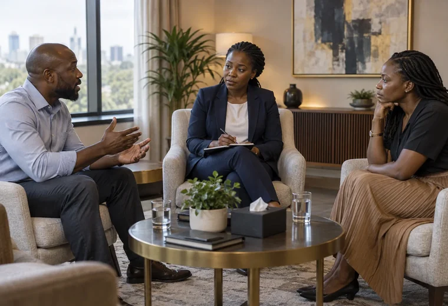

01 / Advocate of the High Court of Kenya
Bobderek Mayaka Obwocha
Advocate and legal consultant with experience in litigation, dispute resolution, compliance and corporate advisory.
03 / Our Advocate
Advocate of the High Court of Kenya with experience in litigation, dispute resolution, compliance and corporate advisory.
The advocate
The professional profile combines formal legal training, mediation credentials, litigation experience and interest in rapidly evolving areas of technology and regulation.
01 / Advocate of the High Court of Kenya
Advocate and legal consultant with experience in litigation, dispute resolution, compliance and corporate advisory.
02 / Education
LL.B. (Hons), Moi University – Eldoret; Post-Graduate Diploma in Law, Kenya School of Law.

03 / Mediation
Professional mediation training through Mediation Training Institute – East Africa.
04 / Emerging fields
Professional interests include AI and digital governance, blockchain, virtual currency, capital markets, EAC law and sustainable development.
Professional perspective
Bobderek’s interests extend beyond traditional litigation into business, investment, regional law, digital governance and emerging technology.
Talk to the practice ↗